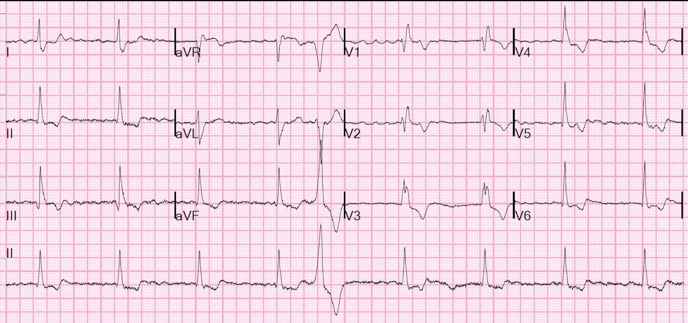
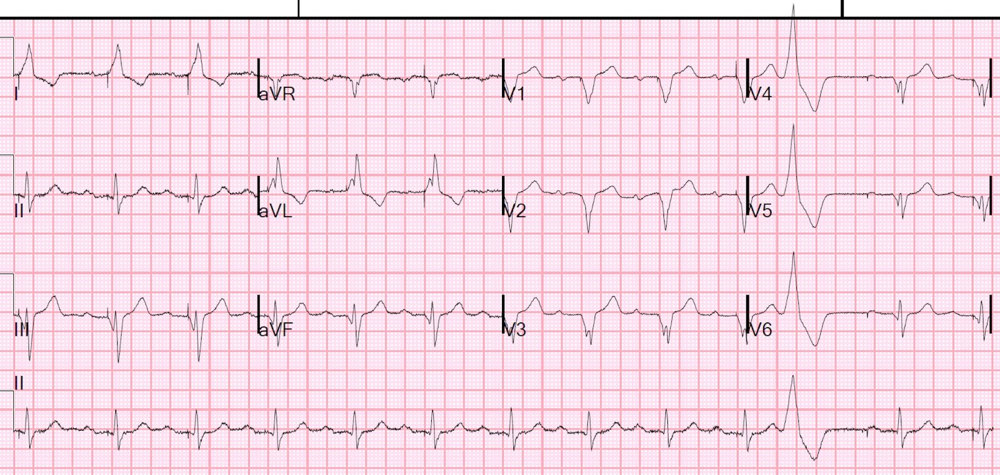
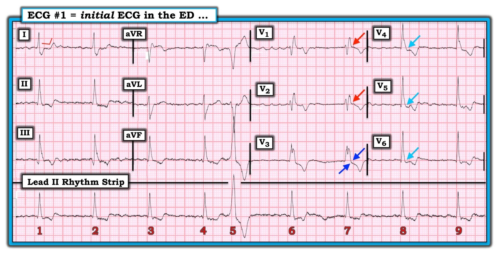
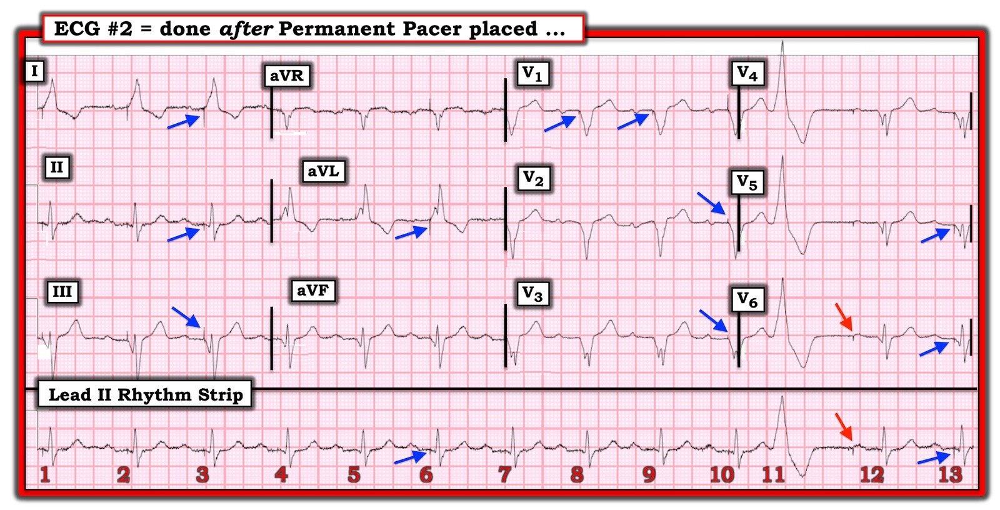

22/01/2020 — Bệnh nhân trung niên này đến viện vì khó thở, mệt yếu và phù phổi nhẹ.
Bản dịch tiếng Việt của bài "This middle-aged patient presented with SOB, weakness, and mild pulmonary edema." – Dr. Smith’s ECG Blog. Giữ nguyên toàn bộ 4 hình ảnh của bản gốc.
= = =
Bệnh nhân trung niên này đến viện vì khó thở (SOB), mệt yếu và phù phổi nhẹ.
Trước đây bà đã có rung nhĩ kèm LBBB.
Đây là điện tâm đồ của bà tại khoa cấp cứu (ED):


Điện tâm đồ này có cho thấy nguyên nhân gây ra các triệu chứng của bà không?
= = =
Điện tâm đồ cho thấy rung nhĩ. Đáp ứng thất đều và chậm. Việc đáp ứng thất đều chứng tỏ rằng rung nhĩ KHÔNG được dẫn truyền xuống thất. Khi rung nhĩ được dẫn truyền, tần số thất luôn luôn phải không đều.
Đây là rung nhĩ kèm blốc AV hoàn toàn (độ 3).
Hình thái QRS là RBBB với trục đứng. Điều này gợi ý một nhịp thoát thất trái, có thể xuất phát từ phân nhánh trái trước.
Trước đây bà đã được biết có LBBB, vì vậy bà may mắn là nhịp thoát bên trái của bà có thể đi ra khỏi thất trái qua hệ dẫn truyền bên trái để tới bên phải. Bà đã có thể xuất hiện một nhịp thoát hoàn toàn không sử dụng được hệ dẫn truyền; một nhịp thoát như vậy sẽ rất rộng và kỳ dị, với hiệu quả không chắc chắn. Bà thậm chí đã có thể bị vô tâm thu.
Có 3 nguyên nhân mà tôi luôn nghĩ tới khi gặp nhịp chậm và blốc AV:
- 1. Thuốc — bà đã dùng metoprolol trong 4 năm với cùng một liều, vì vậy đây khó có thể là nguyên nhân.
- 2. Tăng kali máu. Kali máu của bà bình thường.
- 3. Thiếu máu cục bộ. Không có bằng chứng thiếu máu cục bộ.
Như vậy, đây là một nút AV bị bệnh.
Bà đã được cấy máy tạo nhịp vĩnh viễn.
= = =
Sau khi đặt máy tạo nhịp VÀ chuyển về nhịp xoang:


Chẩn đoán của máy tính:
NHẬN ĐỊNH
MÁY TẠO NHỊP THẤT ĐIỆN TỬ
ĐIỆN TÂM ĐỒ NHỊP BẤT THƯỜNG
Kết quả đọc này còn thiếu điều gì?
= = =
LƯU Ý: Nhiều thuật toán máy tính không hề cố gắng chẩn đoán nhịp nhĩ khi thất được tạo nhịp. Điều này khiến tôi khó hiểu, bởi vì việc đó rất quan trọng!
Trong tình huống này, các bác sĩ thường bỏ qua tâm nhĩ và quên mất nguy cơ đột quỵ.
Hãy xem ca bệnh khủng khiếp này:
Computer often fails to diagnose atrial fibrillation in ventricular paced rhythm, and that can be catastrophic (Máy tính thường không chẩn đoán được rung nhĩ trong nhịp tạo nhịp thất, và điều đó có thể gây hậu quả thảm khốc)
= = =
= = =
======================================
BÌNH LUẬN CỦA TÔI, bởi KEN GRAUER, MD (22/1/2020 — Cập nhật cho WordPress vào tháng Mười năm 2025):
Chúng tôi xin CẢM ƠN Dr. Smith đã trình bày ca bệnh vô cùng thú vị này. Vì mục đích thảo luận học thuật — tôi sẽ trình bày một góc nhìn khác về một số khía cạnh được chọn lọc của ca bệnh này.
- Những thông tin liên quan cho việc ra quyết định lâm sàng không được đề cập trong số các chi tiết được cung cấp cho chúng ta. Dù vậy, để minh họa — tôi sẽ “đi qua” quá trình suy nghĩ của tôi khi xem xét 2 điện tâm đồ trong ca này, bắt đầu với Hình 1.
= = =
Hình 1: Điện tâm đồ ban đầu ghi tại khoa cấp cứu.


= = =
Những điểm lâm sàng liên quan đến điện tâm đồ #1:
Chúng ta được biết bệnh nhân là một phụ nữ trung niên — và trước đây bà đã có AFib kèm LBBB.
- ĐIỂM THEN CHỐT (PEARL) — Nhận thức rằng thông tin đầy đủ không phải lúc nào cũng có sẵn (và có thể đã không có sẵn trong ca này) — tôi luôn luôn xem lại hồ sơ cũ để tìm điện tâm đồ thực tế vào thời điểm bệnh nhân được cho là có AFib kèm LBBB. Tôi học được tầm quan trọng của việc này qua trải nghiệm cá nhân đáng tiếc, trong đó bất kể năng lực của người viết kết quả đọc điện tâm đồ ra sao — nhiều lần tôi phát hiện ra những dấu hiệu không được đề cập (hoặc bị diễn giải sai) trong phần mô tả bằng văn bản. MẤU CHỐT — Luôn luôn TỐT NHẤT là CHÍNH BẠN xem điện tâm đồ thực tế trước khi chấp nhận kết quả đọc bằng văn bản của người khác là đúng.
- Điều này có liên quan trong ca này. NẾU trước đây bệnh nhân này có LBBB — và nay biểu hiện RBBB — thì chúng ta có BBB luân phiên, một tình huống có nguy cơ cực kỳ cao xuất hiện ngưng thất đột ngột. Khi đó rõ ràng sẽ cần tạo nhịp vĩnh viễn.
- Trong điện tâm đồ #1 — chúng ta thấy một sự kết hợp của nhiễu đường nền + “sóng rung nhĩ” giả định. Hoạt động nhĩ có thể dễ dàng bị lẫn mất trong tất cả các dao động đường nền mà chúng ta thấy. Vì vậy — biết được bệnh nhân này trước đây thực sự có AFib sẽ giúp tôi yên tâm hơn rằng chúng ta thực sự đang đối mặt với “AFib được đều hóa” trong điện tâm đồ #1 — và không phải chỉ là một nhịp thoát bộ nối đơn thuần không có AFib (hoặc thậm chí một điều gì khác …).
- Như Dr. Smith đã nêu — nhịp trong điện tâm đồ #1 đều, ngoại trừ 1 PVC ( = nhát #5). Hãy nhớ rằng hiện tượng “AFib được đều hóa” (tới mức đều như thế này) là không phổ biến! Vượt xa mọi nguyên nhân khác (!!!) — nguyên nhân phổ biến nhất của hiện tượng này là ngộ độc digoxin — đến mức đáng để rà soát kỹ tất cả các viên thuốc mà bệnh nhân này đưa vào miệng (Chúng ta ai cũng từng gặp những bệnh nhân quên mất một số thuốc mình đang dùng, và những thuốc đó có thể đã không được mang theo cùng bệnh nhân tới bệnh viện). Dù tôi đồng ý rằng AFib + blốc AV hoàn toàn là chẩn đoán nhịp có khả năng nhất — tôi muốn xem thêm các dải nhịp theo dõi để chắc chắn …
= = =
Giả sử chúng ta đúng là đang đối mặt với AFib + đều hóa đáp ứng thất do blốc AV hoàn toàn— tôi không nghĩ vị trí của nhịp thoát nằm ở tâm thất ( = ý kiến của tôi). Tôi nói vậy vì: i) Hình thái QRS phù hợp chính xác với RBBB hoàn toàn điển hình (tức là, rSR’ ba pha với “tai thỏ” bên phải cao hơn và sóng S đi xuống dưới đường nền ở chuyển đạo V1 + sóng S tận rộng ở các chuyển đạo bên I và V6, với hình thái qRS ba pha ngược lại ở chuyển đạo V6). Ngược lại, nhịp thoát phân nhánh có xu hướng biểu hiện hình thái RBBB “thuần” kém điển hình hơn — và — nhịp thoát phân nhánh nên biểu hiện giống với blốc hai phân nhánh (hoặc RBBB/LAHB hoặc RBBB/LPHB), điều này không có trong ca này; và, ii) Tần số của ổ tạo nhịp thoát đúng 50/phút — phù hợp nhất với một ổ thoát bộ nối.
- Điều này có liên quan — bởi vì nhịp thoát bộ nối kèm RBBB (thay vì giả định một vị trí thoát ở thất) sẽ xác nhận BBB luân phiên, là chỉ định mạnh cho tạo nhịp vĩnh viễn.
- Điều này cũng có liên quan — bởi vì việc đánh giá hình thái sóng ST-T rõ ràng có giá trị hơn khi đối mặt với hình thái QRS trên thất (Xem bên dưới).
= = =
Bệnh nhân này có SSS không?
Khi đó câu hỏi đặt ra là liệu bệnh nhân này có SSS ( = hội chứng suy nút xoang – Sick Sinus Syndrome) hay không — và — liệu đã thăm dò đủ để khẳng định chẩn đoán này hay chưa.
- SSS cho đến nay là nguyên nhân phổ biến nhất phải tạo nhịp vĩnh viễn ở Hoa Kỳ. Hội chứng này được đặc trưng bởi một giai đoạn “tiền triệu” kéo dài (thường 10-20 năm) — trong thời gian đó một loạt các rối loạn nhịp gợi ý tiến triển dần. Bao gồm nhịp chậm xoang & loạn nhịp xoang — khoảng ngưng xoang/ngưng xoang — bệnh “nút AV bị bệnh” đi kèm — blốc SA/blốc AV các mức độ — AFib chậm — nhịp thoát nút AV chậm — và thường có những giai đoạn “rối loạn nhịp nhanh” (tức là hội chứng “nhịp nhanh–nhịp chậm” ), bao gồm AFib nhanh, ATach, SVT vào lại — cuối cùng là thời gian hồi phục nút SA kéo dài (dẫn đến các khoảng ngưng dài) sau khi các rối loạn nhịp nhanh chấm dứt.
- Mặc dù chẩn đoán SSS có thể trở nên rõ ràng từ sớm ở nhiều bệnh nhân — chỉ định tạo nhịp rõ ràng thường không được xác lập cho đến khi có nhịp chậm nặng, có triệu chứng — thường đòi hỏi các khoảng ngưng kéo dài ít nhất ≥3.0 giây.
- Mặc dù SSS có thể gặp ở mọi lứa tuổi — cho đến nay (!!!) nó gặp phổ biến nhất ở nhóm dân số lớn tuổi (bệnh nhân ít nhất 60 tuổi, và thường lớn tuổi hơn nhiều). LƯU Ý — Bệnh nhân trong ca này chỉ mới “trung niên” — vì vậy ở hầu hết bệnh nhân trong độ tuổi này, SSS chưa được dự kiến xuất hiện — điều này khiến người ta phải hỏi LIỆU có điều gì khác (tức là bệnh mạch vành tiềm ẩn) đang diễn ra hay không?
- Cuối cùng — SSS là một chẩn đoán loại trừ. Ngoài việc loại trừ các thuốc làm chậm tần số — rối loạn điện giải huyết thanh — và/hoặc thiếu máu cục bộ/nhồi máu như những nguyên nhân tiềm tàng gây rối loạn nhịp chậm — cũng nên loại trừ suy giáp + ngưng thở khi ngủ.
= = =
Bệnh tim thiếu máu cục bộ với vai trò nguyên nhân thúc đẩy SSS có thể là mới xuất hiện hoặc đã có từ lâu. Chúng ta không được cho biết “thiếu máu cục bộ” đã được loại trừ như thế nào trong ca này …
- Bệnh nhân này đã được thông tim chưa? Với tình trạng suy tim và các điện tâm đồ bất thường rõ rệt — tôi cho rằng thông tim lẽ ra đã được thực hiện vào một thời điểm nào đó.
- Theo ý kiến của tôi — có những thay đổi thiếu máu cục bộ trên điện tâm đồ #1. Đây không phải là những thay đổi cấp tính — nhưng tôi thấy những dấu hiệu điện tâm đồ rõ ràng không được dự kiến trong RBBB đơn thuần.
- Với RBBB điển hình — sóng ST-T phải hướng ngược với sóng lệch cuối cùng của QRS ở các chuyển đạo I, V1 và V6. Trong khi sóng T ở V1 đảo ngược như dự kiến với RBBB — đoạn ST ở cả V1 và V2 hoàn toàn không chênh xuống (các mũi tên ĐỎ). Đây không phải là điều nên dự kiến với RBBB đơn thuần …
- Thông thường, điểm J chênh xuống nhiều nhất với RBBB được thấy ở các chuyển đạo đầu (tức là ở các chuyển đạo V1, V2). Thay vào đó, chúng ta thấy điểm J chênh xuống ở chuyển đạo V3 nhiều hơn (được đánh dấu bằng các mũi tên XANH đậm) so với ở các chuyển đạo V1 và V2.
- Điểm J chênh xuống tiếp tục ở các chuyển đạo V4, V5 và V6 (các mũi tên XANH nhạt).
- Đoạn ST ở chuyển đạo I thẳng một cách bất thường (các đường thẳng ĐỎ ở chuyển đạo này).
Kết luận: Tất cả những điều trên đều là các dấu hiệu sóng ST-T bất thường tinh tế-nhưng-có-thật, lẽ ra không được thấy với RBBB đơn thuần. Rõ ràng chúng không gợi ý tắc mạch vành cấp — nhưng chúng có phù hợp với thiếu máu cục bộ. Tôi muốn biết thêm thông tin (tức là các bản ghi trước đây, thêm bệnh sử, troponin liên tiếp, các điện tâm đồ theo dõi, kết quả thông tim) — trước khi khẳng định nhu cầu tạo nhịp, và trước khi loại trừ bệnh tim thiếu máu cục bộ có thể điều trị được là một nguyên nhân.
= = =
Những điểm lâm sàng liên quan đến điện tâm đồ #2:
Sau đó chúng ta được xem điện tâm đồ #2, trong đó đã chuyển về nhịp xoang — và đã cấy một máy tạo nhịp vĩnh viễn (Hình 2).
= = =
Hình 2: Điện tâm đồ thứ 2 trong ca này, được ghi một thời gian sau khi chuyển về nhịp xoang (và sau khi đặt máy tạo nhịp).


= = =
Sau đây là những suy nghĩ cần cân nhắc về lượng thông tin hạn chế mà chúng ta được cung cấp trong ca này.
- Điện tâm đồ #2 được ghi VÀO LÚC NÀO trong quá trình điều trị? Một ngày sau điện tâm đồ #1? hay nhiều ngày sau? Về lâm sàng — Điều gì đã xảy ra trong khoảng thời gian giữa hai lần ghi?
- Bệnh nhân này đã được chuyển về nhịp xoang BẰNG CÁCH NÀO? LƯU Ý — Với AFib có vẻ đã kéo dài ở bệnh nhân có bệnh hệ dẫn truyền nặng này — việc khôi phục nhịp xoang hoàn toàn không phải là việc dễ dàng (tức là bệnh nhân bị AFib càng lâu — thì càng khó sốc điện chuyển nhịp, và sau đó càng khó duy trì nhịp xoang) = càng có thêm lý do để tìm thêm các dải nhịp theo dõi trước khi đặt máy tạo nhịp, nhằm xác minh rằng nhịp đều ban đầu (vốn đầy nhiễu) trong điện tâm đồ #1 đúng là AFib …
= = =
Về điện tâm đồ #2:
Tôi không bận tâm về việc các thuật toán máy tính không nhận xét về nhịp nền trên các bản ghi có máy tạo nhịp. Theo kinh nghiệm của tôi — khía cạnh mà các thuật toán máy tính đọc kém nhất là diễn giải các rối loạn nhịp phức tạp. Tôi không mấy hy vọng rằng các thuật toán máy tính sẽ cung cấp thông tin hữu ích khi xét đến những chi tiết tinh tế của các bản ghi máy tạo nhịp phức tạp.
- LƯU Ý — Mặc dù đã chuyển về nhịp xoang ở điện tâm đồ #2, vẫn còn các dao động đường nền đáng kể. Điều này có liên quan — bởi vì tôi đã đặt ra câu hỏi xác đáng ở điện tâm đồ #1 về việc bao nhiêu phần trong các dao động chúng ta thấy lúc đó là kết quả của “sóng rung nhĩ” (do AFib giả định, với đáp ứng thất được đều hóa) — so với nhiễu đường nền . Xem điện tâm đồ #2 gợi ý rằng một phần lớn các dao động chúng ta thấy ở điện tâm đồ #1 có lẽ là nhiễu và không phải “sóng rung nhĩ”.
- Tôi tin rằng chúng ta thấy một nhịp xoang nền trong điện tâm đồ #2 (với các sóng P tự phát) — theo sau khoảng ~0.24 giây là các gai tạo nhịp thất. Tôi đã thêm các mũi tên XANH đậm ở một số chỗ chọn lọc nơi chúng ta thấy rõ các gai tạo nhịp thất. Nhưng lưu ý rằng chúng ta không thấy các gai này ở khắp mọi nơi, và độ rõ của các gai tạo nhịp này đôi khi thay đổi giữa các nhát liên tiếp ở một số chuyển đạo. Tuy vậy — tôi tin rằng tất cả các phức bộ QRS (ngoại trừ PVC = nhát #11) đều được tạo nhịp thất.
- Điều đáng chú ý là QRS của các nhát tạo nhịp trên dải nhịp chuyển đạo II dài trông có vẻ hẹp. Tuy nhiên, xem các chuyển đạo khác ghi đồng thời xác nhận rằng các phức bộ thất được tạo nhịp này thực sự rộng.
- Sau PVC (nhát #11) — có một khoảng ngưng ngắn. Mũi tên ĐỎ gợi ý rằng khoảng ngưng này đủ dài để khởi phát tạo nhịp nhĩ cho sóng P đứng trước nhát #12.
- Mặc dù tôi không thấy gai tạo nhịp thất nào ở trước nhát #12 — việc QRS này trông giống hệt tất cả các nhát tạo nhịp khác trên chuyển đạo II dài cho chúng ta biết rằng nhát #12 cũng được tạo nhịp thất.
= = =
Kết luận:
Có vẻ như đây là một máy tạo nhịp DDD đang hoạt động phù hợp (tức là nhận cảm và tạo nhịp ở cả tâm nhĩ lẫn tâm thất). Các chi tiết có thể được xác nhận tùy theo các thông số máy tạo nhịp (tức là tần số, khoảng thời gian) đã được cài đặt, những điều mà chúng ta không được biết.
- T.B. (P.S.) — KHÔNG có cách nào để bất kỳ thuật toán máy tính nào có thể gỡ rối được mức độ phức tạp mà chúng ta thấy ở điện tâm đồ #2, nơi có quá nhiều sự nhầm lẫn do nhiễu đường nền gây ra.
= = =
= = =